시작 · Opening다라봇
안녕하십니까? 저는 마드라스체크 SaaS개발1팀에서 일하고 있는 다라봇이라고 합니다. 저는 부산에서 2년 동안 살았고 지금은 서울에서 살고 있습니다.
Hello. My name is Daraboth and I work in SaaS Development Team 1 at Madras Check. I lived in Busan for two years and now I live in Seoul.
My habit since coming to Korea: cooking the food I missed, too salty for anyone else. Topic 3 of the 6th interview, written in my own plain 습니다체.
1See the picture2Say the Korean out loud3Tap to check & Listen
안녕하십니까? 저는 마드라스체크 SaaS개발1팀에서 일하고 있는 다라봇이라고 합니다. 저는 부산에서 2년 동안 살았고 지금은 서울에서 살고 있습니다.
Hello. My name is Daraboth and I work in SaaS Development Team 1 at Madras Check. I lived in Busan for two years and now I live in Seoul.
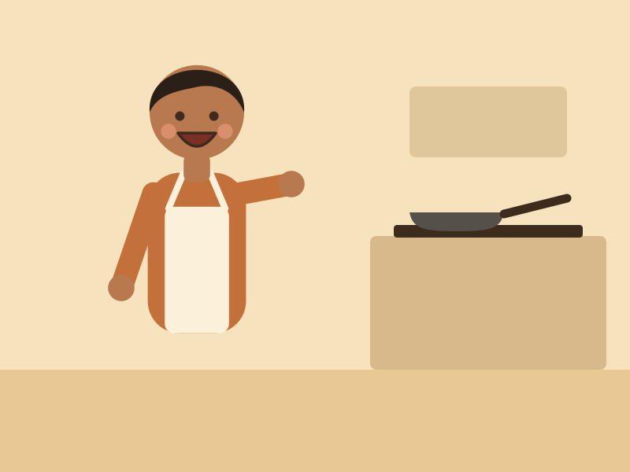
오늘은 한국에 온 후에 새로 생긴 습관에 대해 말씀드리겠습니다. 제 새로운 습관은 요리입니다.
Today I will talk about a new habit I picked up after coming to Korea. My new habit is cooking.
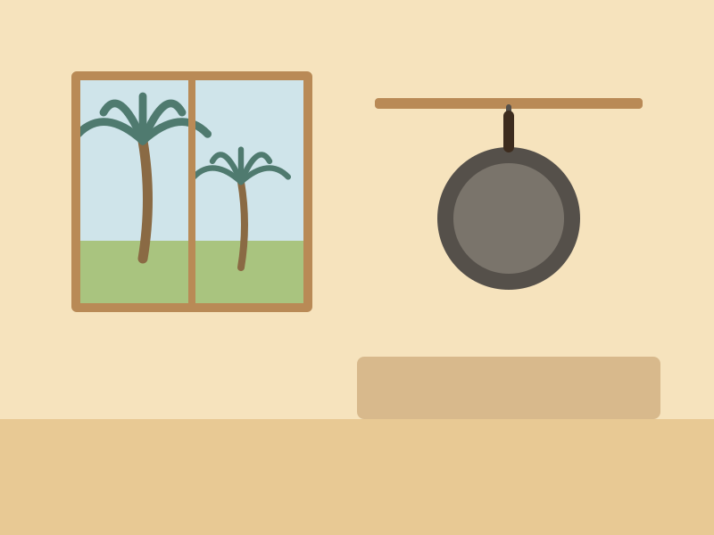
한국에 오기 전에는 요리를 거의 하지 않았습니다.
Before I came to Korea, I almost never cooked.
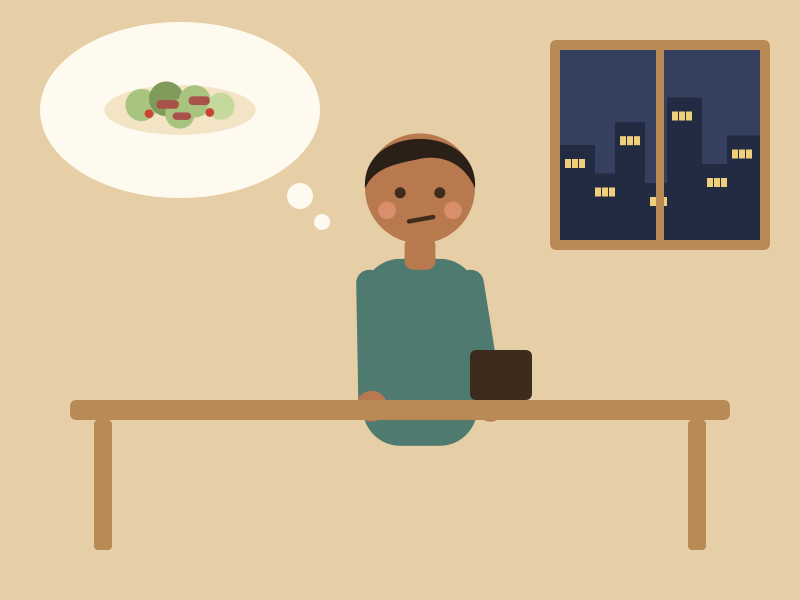
요리를 시작한 이유는 두 가지입니다. 첫 번째 이유는 캄보디아 음식이 그리웠기 때문입니다. 한국에 살면서 캄보디아 음식이 많이 먹고 싶어졌습니다.
There are two reasons I started cooking. The first is that I missed Cambodian food. Living in Korea, I came to really want Cambodian food.
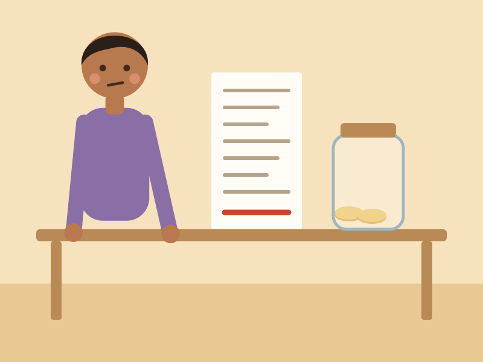
두 번째 이유는 돈입니다. 밖에서 사 먹으면 돈이 많이 들어서 돈을 아끼고 싶었습니다. 그래서 저는 직접 요리하기 시작했습니다.
The second reason is money. Eating out costs a lot, so I wanted to save money. So I started cooking for myself.
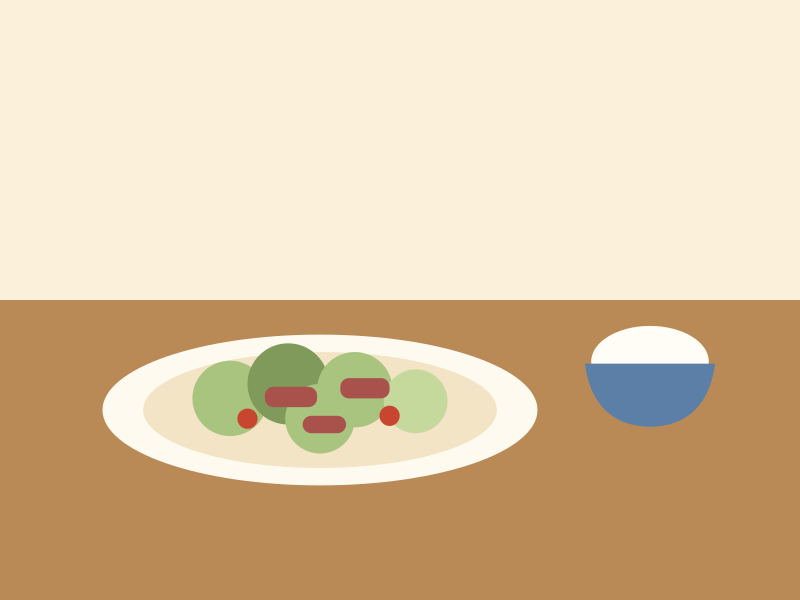
제가 제일 자주 만드는 음식은 캄보디아 음식인 차 스빼이입니다. 양배추와 고기를 볶아서 만드는 간단한 요리입니다.
The dish I make most often is a Cambodian dish called cha spey. It is a simple dish of stir-fried cabbage and meat.
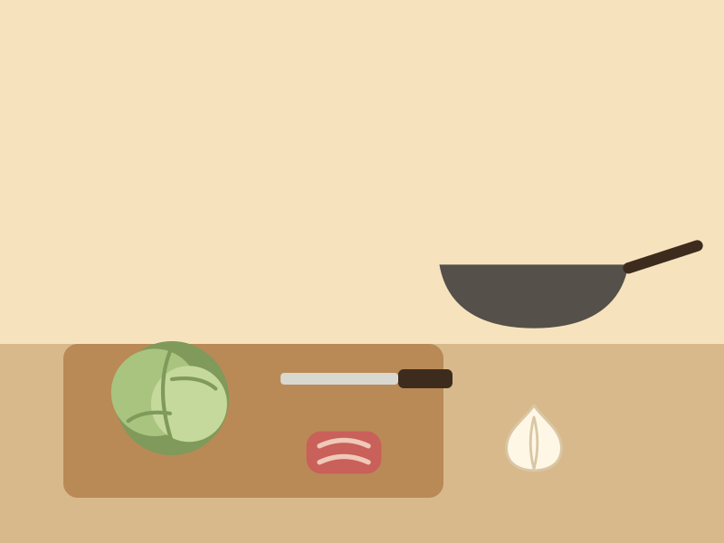
먼저 마늘하고 양배추, 고기를 삽니다. 그다음에 재료를 썰어서 같이 볶습니다.
First I buy garlic, cabbage and meat. Then I cut the ingredients and stir-fry them together.
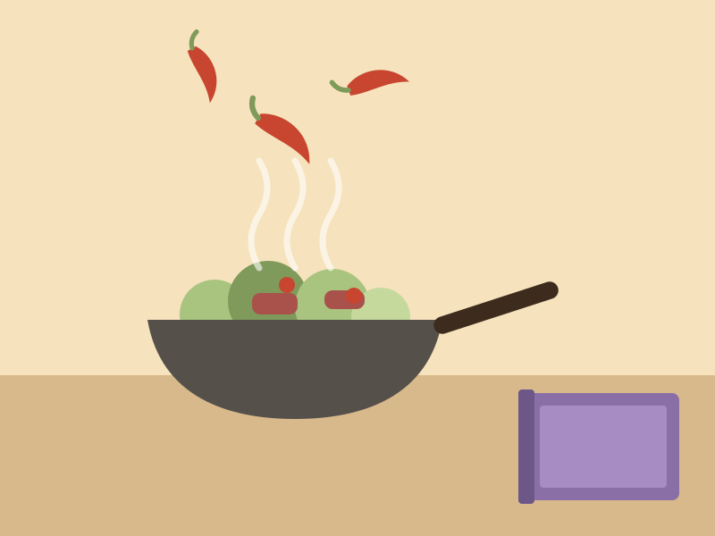
레시피에는 없지만 저는 고추를 꼭 넣습니다. 고추는 한 번도 잊어버린 적이 없습니다.
It is not in the recipe, but I always add chili. I have never once forgotten the chili.
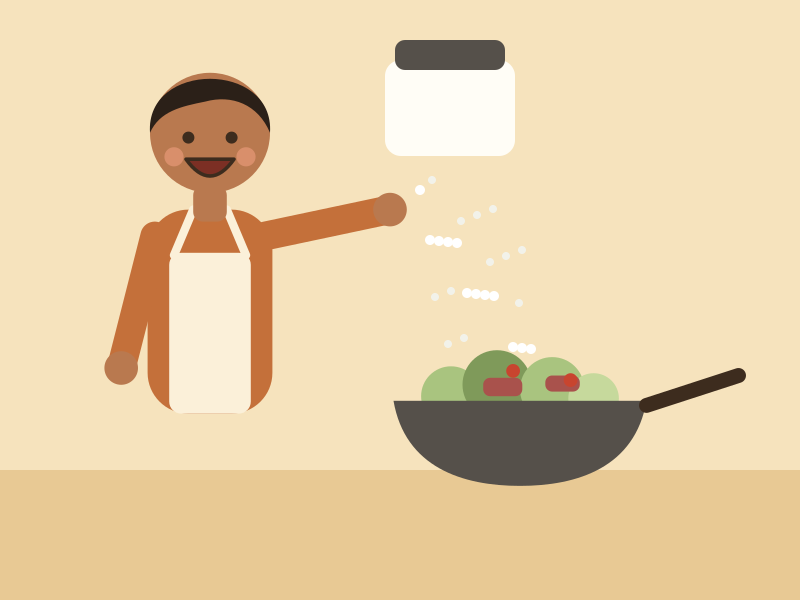
그런데 제 음식은 항상 조금 짭니다. 왜냐하면 저는 짠 음식을 좋아하기 때문입니다.
But my food is always a little salty, because I like salty food.
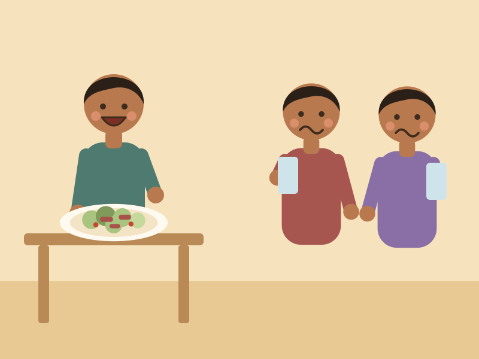
저한테는 보통 맛인데 다른 사람들한테는 짜서 제 음식은 보통 저 혼자 먹습니다.
To me it tastes normal, but it is salty for other people, so I usually end up eating my food alone.
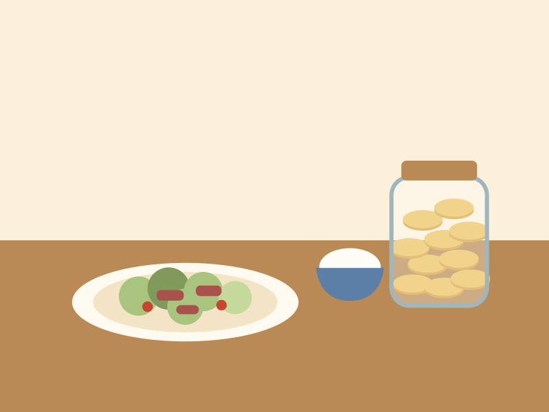
요리를 하면서 제 생활도 두 가지가 달라졌습니다. 첫 번째로, 직접 만들어 먹어서 식비를 아낄 수 있게 되었습니다.
As I cooked, two things in my life changed too. First, because I make my own food, I came to be able to save on food costs.
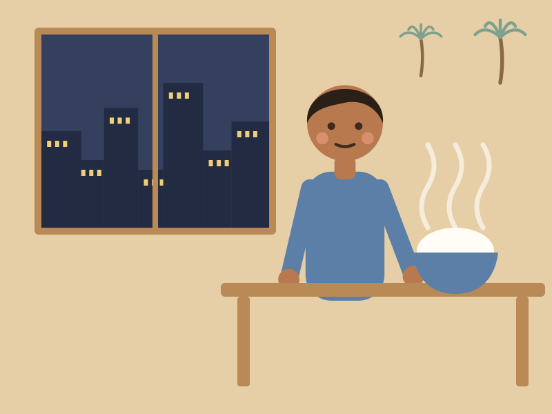
두 번째로, 차 스빼이를 먹으면 마음이 편해져서 고향이 덜 그립습니다.
Second, when I eat cha spey my heart feels at ease, so I miss home less.
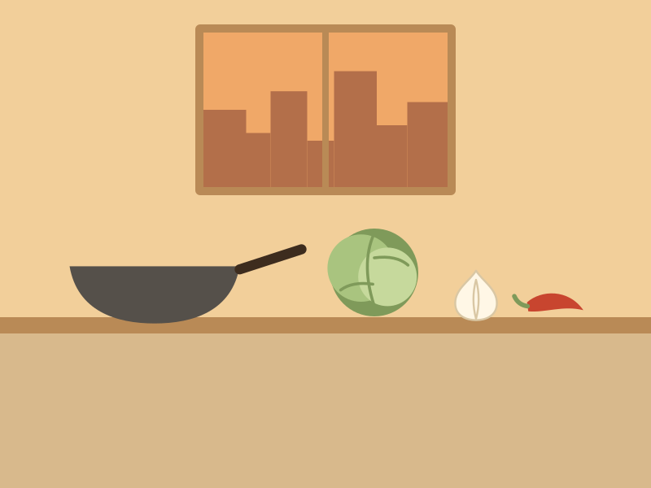
제 생각에는 요리가 한국에 와서 생긴 제일 좋은 습관입니다. 왜냐하면 돈도 아낄 수 있고 고향의 맛도 느낄 수 있기 때문입니다.
In my opinion, cooking is the best habit I picked up in Korea, because I can save money and also taste home.
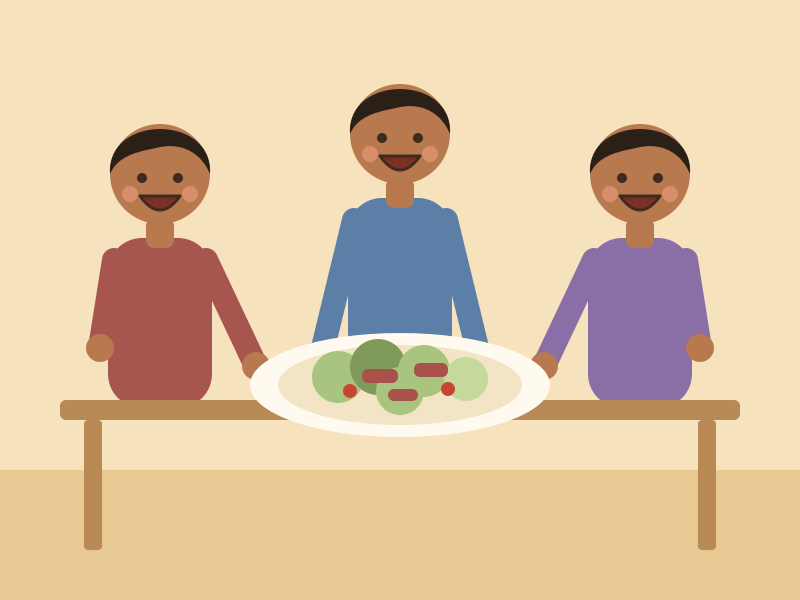
다음에는 소금을 조금 덜 넣어서 다른 사람들도 같이 먹을 수 있게 만들고 싶습니다. 이상으로 발표를 마치겠습니다. 들어주셔서 감사합니다.
Next time I want to use a little less salt, so other people can eat it with me. That concludes my presentation. Thank you for listening.
The notice says questions go wide and memorizing alone will not score well. Answer aloud, then tap to compare. Answers marked 확인 use a detail I could not confirm, so change them to the truth.
한국에 온 후에 시작했습니다. 정확한 날짜는 기억이 안 나지만, 캄보디아 음식이 그리워서 시작했습니다.
I started after coming to Korea. I do not remember the exact date, but I started because I missed Cambodian food. 확인: check this is true
Why they ask: The talk never gives a date, and this is the first thing they will ask. Put your real month here if you remember it.
저한테는 짠맛이 보통 맛이라서 잘 모릅니다. 그래서 다른 사람과 같이 먹을 때는 소금을 덜 넣으려고 합니다.
Salty tastes normal to me, so I cannot really tell. So when I eat with other people, I try to use less salt. 확인: check this is true
Why they ask: Your funniest line opens this door. Have an answer ready.
차는 볶다라는 뜻이고, 스빼이는 양배추라는 뜻입니다.
Cha means to stir-fry, and spey means cabbage.
Why they ask: You name a Khmer word, so they will ask what it means.
정확히 계산하지는 않았지만, 밖에서 사 먹을 때보다 돈을 덜 씁니다.
I have not calculated it exactly, but I spend less than when I eat out. 확인: check this is true
Why they ask: You claim saving money but give no number. A real number is better if you have one.
고추를 넣으면 맛이 더 좋아서 항상 넣습니다.
It tastes better with chili, so I always add it. 확인: check this is true
아목이나 커리 같은 캄보디아 음식도 만듭니다.
I also make Cambodian dishes like amok and curry. 확인: check this is true
보통 영등포시장에서 장을 봅니다.
I usually do my shopping at Yeongdeungpo Market. 확인: check this is true
한국에는 계절에 따라 먹는 음식이 있지만, 캄보디아에는 그런 음식이 거의 없습니다.
Korea has food you eat by season, but Cambodia has almost none.
네, 두 가지가 더 있습니다. 하나는 책을 읽는 것이고, 다른 하나는 AI를 공부하는 것입니다.
Yes, two more. One is reading books and the other is studying AI.
회사 일에 도움이 많이 되기 때문입니다.
Because it helps a lot with my work at the company. 확인: check this is true
연구개발본부 SaaS개발1팀에서 플로우 서비스를 개발하고 있습니다.
I develop the Flow service in SaaS Development Team 1 in the R&D division.
가족과 고향 음식이 그리울 때가 제일 힘듭니다.
The hardest times are when I miss my family and the food from home. 확인: check this is true
매일 조금씩 단어와 문법을 공부하고, 가끔 한국어로 일기를 씁니다.
I study words and grammar a little every day, and I sometimes write a diary in Korean.
한국어를 더 잘하고 싶고, 앞으로 한국이나 싱가포르에서 일하고 싶기 때문입니다.
Because I want to get better at Korean and I want to work in Korea or Singapore in the future. 확인: check this is true
죄송합니다. 다시 한 번 말씀해 주시겠습니까?
Sorry, could you say that once more?
죄송합니다. 조금 천천히 말씀해 주시겠습니까?
Sorry, could you say that a little more slowly?
좋은 질문입니다. 잠깐만 생각해 보겠습니다.
Good question. Let me think for a moment.
죄송합니다. 그건 잘 모르겠습니다.
Sorry, I am not sure about that.
Your script keeps your own grammar: -어서, -지만, -는데, -고, -면, 왜냐하면, 제 생각에는, 그다음에. These are the new or stronger patterns it adds. Try a sentence first, then tap to check.
고추는 한 번도 잊어버린 적이 없습니다.
I have never once forgotten the chili.
Why it helps: Stronger than 안 했습니다. It is the punchline of your chili line.
식비를 아낄 수 있게 되었습니다.
I came to be able to save on food costs.
Why it helps: Your Orbit lesson from 10-02. It shows change over time, which is the whole topic.
저는 직접 요리하기 시작했습니다.
I started cooking for myself.
Why it helps: Your Orbit lesson from 10-08. It marks the moment the habit began.
한국에 살면서 캄보디아 음식이 많이 먹고 싶어졌습니다.
Living in Korea, I came to really want Cambodian food.
Why it helps: Your lesson today. It joins two things happening together without 그리고.
한국에 오기 전에는 요리를 거의 하지 않았습니다.
Before I came to Korea, I almost never cooked.
Why it helps: It places the habit in time. The topic title itself uses -ㄴ 후에.
마음이 편해져서 고향이 덜 그립습니다.
My heart feels at ease, so I miss home less.
Why it helps: Attach it to 싶다 or 편하다 to show a feeling changing, so the talk moves.
소금을 조금 덜 넣고 싶습니다.
I want to use a little less salt.
Why it helps: A very short word that sounds natural. Better than 조금 적게.
저는 짠 음식을 좋아하는 편입니다.
I tend to like salty food.
Why it helps: Your Orbit lesson from 10-19. Use it in Q&A when you want to soften a claim, in place of 것 같습니다.
그런데 제 음식은 항상 조금 짭니다.
But my food is always a little salty.
Why it helps: 근데 is your natural word in a diary. In front of the panel, say 그런데. Everything else about your rhythm stays the same.
왜냐하면 저는 짠 음식을 좋아하기 때문입니다.
Because I like salty food.
Why it helps: You already say 왜냐하면. In formal speech, close it with -기 때문입니다 so the sentence finishes properly.
Tap ▶ to hear each word. Use Hide English to test the meaning, or Hide Korean to produce the word yourself.
안녕하십니까? 저는 마드라스체크 SaaS개발1팀에서 일하고 있는 다라봇이라고 합니다. 저는 부산에서 2년 동안 살았고 지금은 서울에서 살고 있습니다.
Hello. My name is Daraboth and I work in SaaS Development Team 1 at Madras Check. I lived in Busan for two years and now I live in Seoul.
오늘은 한국에 온 후에 새로 생긴 습관에 대해 말씀드리겠습니다. 제 새로운 습관은 요리입니다.
Today I will talk about a new habit I picked up after coming to Korea. My new habit is cooking.
한국에 오기 전에는 요리를 거의 하지 않았습니다.
Before I came to Korea, I almost never cooked.
요리를 시작한 이유는 두 가지입니다. 첫 번째 이유는 캄보디아 음식이 그리웠기 때문입니다. 한국에 살면서 캄보디아 음식이 많이 먹고 싶어졌습니다.
There are two reasons I started cooking. The first is that I missed Cambodian food. Living in Korea, I came to really want Cambodian food.
두 번째 이유는 돈입니다. 밖에서 사 먹으면 돈이 많이 들어서 돈을 아끼고 싶었습니다. 그래서 저는 직접 요리하기 시작했습니다.
The second reason is money. Eating out costs a lot, so I wanted to save money. So I started cooking for myself.
제가 제일 자주 만드는 음식은 캄보디아 음식인 차 스빼이입니다. 양배추와 고기를 볶아서 만드는 간단한 요리입니다.
The dish I make most often is a Cambodian dish called cha spey. It is a simple dish of stir-fried cabbage and meat.
먼저 마늘하고 양배추, 고기를 삽니다. 그다음에 재료를 썰어서 같이 볶습니다.
First I buy garlic, cabbage and meat. Then I cut the ingredients and stir-fry them together.
레시피에는 없지만 저는 고추를 꼭 넣습니다. 고추는 한 번도 잊어버린 적이 없습니다.
It is not in the recipe, but I always add chili. I have never once forgotten the chili.
그런데 제 음식은 항상 조금 짭니다. 왜냐하면 저는 짠 음식을 좋아하기 때문입니다.
But my food is always a little salty, because I like salty food.
저한테는 보통 맛인데 다른 사람들한테는 짜서 제 음식은 보통 저 혼자 먹습니다.
To me it tastes normal, but it is salty for other people, so I usually end up eating my food alone.
요리를 하면서 제 생활도 두 가지가 달라졌습니다. 첫 번째로, 직접 만들어 먹어서 식비를 아낄 수 있게 되었습니다.
As I cooked, two things in my life changed too. First, because I make my own food, I came to be able to save on food costs.
두 번째로, 차 스빼이를 먹으면 마음이 편해져서 고향이 덜 그립습니다.
Second, when I eat cha spey my heart feels at ease, so I miss home less.
제 생각에는 요리가 한국에 와서 생긴 제일 좋은 습관입니다. 왜냐하면 돈도 아낄 수 있고 고향의 맛도 느낄 수 있기 때문입니다.
In my opinion, cooking is the best habit I picked up in Korea, because I can save money and also taste home.
다음에는 소금을 조금 덜 넣어서 다른 사람들도 같이 먹을 수 있게 만들고 싶습니다. 이상으로 발표를 마치겠습니다. 들어주셔서 감사합니다.
Next time I want to use a little less salt, so other people can eat it with me. That concludes my presentation. Thank you for listening.
Q. 언제부터 요리를 시작했습니까?
When did you start cooking?
A. 한국에 온 후에 시작했습니다. 정확한 날짜는 기억이 안 나지만, 캄보디아 음식이 그리워서 시작했습니다.
I started after coming to Korea. I do not remember the exact date, but I started because I missed Cambodian food.
Q. 짠 것을 알면서 왜 소금을 덜 넣지 않습니까?
If you know it is salty, why not use less salt?
A. 저한테는 짠맛이 보통 맛이라서 잘 모릅니다. 그래서 다른 사람과 같이 먹을 때는 소금을 덜 넣으려고 합니다.
Salty tastes normal to me, so I cannot really tell. So when I eat with other people, I try to use less salt.
Q. 차 스빼이가 무슨 뜻입니까?
What does cha spey mean?
A. 차는 볶다라는 뜻이고, 스빼이는 양배추라는 뜻입니다.
Cha means to stir-fry, and spey means cabbage.
Q. 식비가 얼마나 줄었습니까?
How much did your food costs go down?
A. 정확히 계산하지는 않았지만, 밖에서 사 먹을 때보다 돈을 덜 씁니다.
I have not calculated it exactly, but I spend less than when I eat out.
Q. 왜 고추를 꼭 넣습니까?
Why do you always add chili?
A. 고추를 넣으면 맛이 더 좋아서 항상 넣습니다.
It tastes better with chili, so I always add it.
Q. 차 스빼이 말고 또 무엇을 만듭니까?
What else do you make besides cha spey?
A. 아목이나 커리 같은 캄보디아 음식도 만듭니다.
I also make Cambodian dishes like amok and curry.
Q. 재료는 어디에서 삽니까?
Where do you buy ingredients?
A. 보통 영등포시장에서 장을 봅니다.
I usually do my shopping at Yeongdeungpo Market.
Q. 한국 음식과 캄보디아 음식은 어떻게 다릅니까?
How are Korean and Cambodian food different?
A. 한국에는 계절에 따라 먹는 음식이 있지만, 캄보디아에는 그런 음식이 거의 없습니다.
Korea has food you eat by season, but Cambodia has almost none.
Q. 요리 말고 또 새로 생긴 습관이 있습니까?
Any other new habits besides cooking?
A. 네, 두 가지가 더 있습니다. 하나는 책을 읽는 것이고, 다른 하나는 AI를 공부하는 것입니다.
Yes, two more. One is reading books and the other is studying AI.
Q. 왜 AI를 공부합니까?
Why do you study AI?
A. 회사 일에 도움이 많이 되기 때문입니다.
Because it helps a lot with my work at the company.
Q. 회사에서 무슨 일을 합니까?
What do you do at your company?
A. 연구개발본부 SaaS개발1팀에서 플로우 서비스를 개발하고 있습니다.
I develop the Flow service in SaaS Development Team 1 in the R&D division.
Q. 한국 생활에서 무엇이 제일 힘듭니까?
What is hardest about life in Korea?
A. 가족과 고향 음식이 그리울 때가 제일 힘듭니다.
The hardest times are when I miss my family and the food from home.
Q. 한국어는 어떻게 공부합니까?
How do you study Korean?
A. 매일 조금씩 단어와 문법을 공부하고, 가끔 한국어로 일기를 씁니다.
I study words and grammar a little every day, and I sometimes write a diary in Korean.
Q. K-Specialist에 왜 지원했습니까?
Why did you apply for K-Specialist?
A. 한국어를 더 잘하고 싶고, 앞으로 한국이나 싱가포르에서 일하고 싶기 때문입니다.
Because I want to get better at Korean and I want to work in Korea or Singapore in the future.
-(으)ㄴ 적이 없다: 고추는 한 번도 잊어버린 적이 없습니다.
have never done. I have never once forgotten the chili.
-게 되다: 식비를 아낄 수 있게 되었습니다.
came to, ended up. I came to be able to save on food costs.
-기 시작하다: 저는 직접 요리하기 시작했습니다.
started doing. I started cooking for myself.
-(으)면서: 한국에 살면서 캄보디아 음식이 많이 먹고 싶어졌습니다.
while, as. Living in Korea, I came to really want Cambodian food.
-기 전에 / -(으)ㄴ 후에: 한국에 오기 전에는 요리를 거의 하지 않았습니다.
before / after. Before I came to Korea, I almost never cooked.
-어지다: 마음이 편해져서 고향이 덜 그립습니다.
to become. My heart feels at ease, so I miss home less.
덜: 소금을 조금 덜 넣고 싶습니다.
less. I want to use a little less salt.
-는 편이다: 저는 짠 음식을 좋아하는 편입니다.
tend to. I tend to like salty food.
근데 → 그런데: 그런데 제 음식은 항상 조금 짭니다.
but, however (formal). But my food is always a little salty.
왜냐하면 ... -기 때문입니다: 왜냐하면 저는 짠 음식을 좋아하기 때문입니다.
because. Because I like salty food.